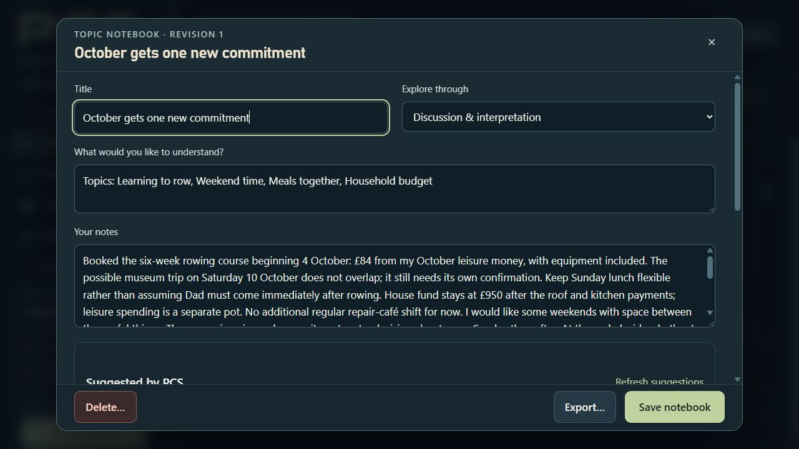
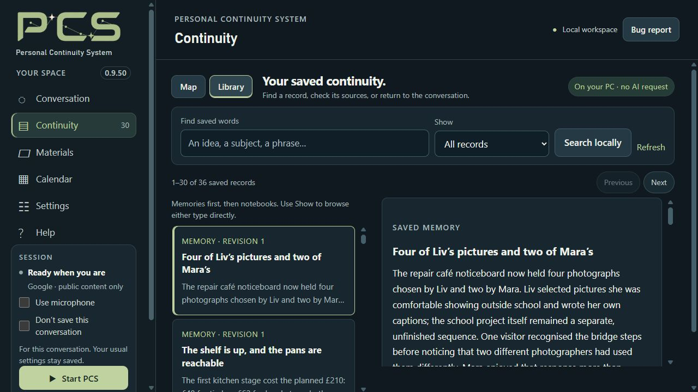

Materials & notebooks
Read TXT, Markdown, selectable-text PDF and EPUB. Use Prepare reading notes for a selected portion, or save your own notes and source links in a notebook.
Materials and notebook setup ↗A Windows app for conversation, learning & memory
PCS is a Windows app for talking or typing with AI. It can save original passages and form memories you can inspect and correct.
Use a supported Local model or connect Google or OpenAI with your API key. PCS also includes document reading, notebooks, practice and a local Calendar.
01 / Saved records
The Map groups recurring wording and saved topic labels from memories and notebooks. Select a theme or connection to inspect its supporting records.
This demonstration contains six weeks of fictional records for Mara, a fleet technician, and her family.
Open the full Map demonstration ↗Interactive website demonstration · Fictional records · No AI requests
Lines connect shared saved content. They do not establish cause or hidden meaning.
Node counts show supporting records. Open a connection to see the records two themes share.
Use Focus rings, Grid or Saved-date, or Compare two themes. Filters change the records and connections shown.
In PCS, save named views and connection notes. Review selected records before placing a draft in Conversation.
02 / Memory
Saving a conversation and forming a memory are separate steps. PCS keeps original passages apart from the model’s source-linked interpretations.
Library provides access to saved records, original sources and revision history. Automatic learning preserves records you have corrected.
Memory, sources and correction controls ↗Saving and memory formation
Saved passages preserve recorded wording. Memories are source-linked interpretations that can be revised. Saving & memory health shows pending work and problems.
Illustrative example
“Liv said the river walk sounded boring, then asked where my old camera was. I don’t quite understand that.”
Mara is trying to understand Liv’s interest in the river and photography.
Sources and revision history
Open a memory in Library to inspect its sources and history. Edit its interpretation and choose Save correction. Automatic memory formation preserves your edited record.
Illustrative owner correction
“Liv dislikes river walks.”
“Liv said she likes the river. She did not want me planning her whole afternoon. She gets to choose.”
Selective context for the current question
PCS searches current memories and permitted original passages. Before sharing, it checks saved versions, permissions and required corrections. If the needed correction context will not fit, that evidence is left out.
An example of relevant context
“Help me think of something to suggest for Sunday.”
Liv likes the river and taking pictures. Borrowing the camera does not make it a shared project or a planned family outing.
Word search and optional search by meaning. A separate CPU model can find related wording in memories and permitted passages. Its index stays in RAM and clears at Lock.
Open the complete memory diagram ↗03 / Local AI
Local conversation and memory run on your PC using the selected model. Saved records remain in the same vault when you change providers.
The guided setup uses Gemma 4 12B. Experimental Custom GGUF support includes compatibility checks and up to eight named custom setups for model, runtime, projector, context and speech choices. Switch setups while stopped.
Selected Local model · 8K, 16K or 32K context
No cloud AI fallback for these Local pathsWord search · Optional Nomic search on CPU
Search index clears at Lock; saved records remainOffline English recognition · Windows or Kokoro replies
CPU/GPU options; no speech pack needed for typingOBS scene + matching projector · Brave lookup
Web queries and page requests go online04 / Other tools
Materials includes document reading, prepared notes and editable notebooks. Research and Practice have separate results and history. Calendar stores local tasks, goals and events.
Read TXT, Markdown, selectable-text PDF and EPUB. Use Prepare reading notes for a selected portion, or save your own notes and source links in a notebook.
Materials and notebook setup ↗Google and OpenAI support retained Study research. Local supports optional Brave lookup. Saved Practice records answers submitted through the exercise card for a selected notebook lesson.
Local web lookup needs a Brave key. Public-page capture is bounded; not every page can be read.
Create local tasks, goals and events manually, or allow Calendar assistance. Only when I ask limits AI changes to direct requests. Manual controls work without starting AI.
A local planner; no external sync or reminders.
See the Calendar ↗

Optional / Conversation
Proactive help is Off by default. In Settings → Conversation, choose Review model and inputs before enabling it. Screen-based offers wait during conversation activity, expire, and can be paused or dismissed.
Type a problem and Your current step, or review a permitted screen observation. Choose Confirm problem and step before requesting a concept hint or different practice task. Explain a full solution is a separate request.
Compatible Local models can provide this help. Typed problems need no Vision; Local screen input needs a matching projector. Exact checks cover supported arithmetic and linear equations in x. AI explanations still need review.
Storage / Permissions
Saved conversations, memories and notebooks live in your encrypted vault. Cloud features send permitted content to the displayed provider. Original Materials and readable exports sit outside vault encryption.
Read the data and privacy guide ↗Google and OpenAI use your API key. Local uses supported hardware and downloaded components. Qwen is an experimental cloud voice route with separate regional setup.
Saving, learning and sharing are separate controls. “Don’t save” controls PCS saving; it does not undo disclosure to a provider.
Make verified encrypted backups before an update. Keep your passphrase safe; it cannot be recovered. Copy original Materials separately.
PCS 0.9.50 · Pre-release · Windows x64
Free, with no PCS subscription or locked features. Cloud providers may charge for API usage. Local AI uses your hardware.
Download for WindowsUse a fresh writable folder. Bundled Python and ordinary dependencies install offline.
Create a vault and keep its passphrase safe. Updating? Follow the restore guide before creating a new vault.
Review saving, learning and sharing. Try a typed conversation first.
Before you start
PCS uses provider API access, which has its own account, billing and access terms. A consumer chat subscription does not by itself supply a PCS API key. Supported Local use does not need a cloud AI subscription.
Yes. Browse saved records and the Map, read Materials, edit notebooks, and use manual Calendar controls. AI conversation, research and model-generated help require an appropriate configured connection.
Local conversation and memory have no cloud AI fallback. Model and component downloads need the internet. If enabled, Brave lookup sends queries and page requests online. Separately approved cloud preparation sends material to the selected provider.
Yes. Transcription, summaries, recall and explanations can be mistaken. PCS gives you originals, source links, history and editable interpretations so you can inspect and correct them.
Closing the tab can leave the host running. Use Stop to end conversation and capture, Lock to close vault access, and Quit PCS to shut down. Wait for “PCS closed.”
Project links
Use Discord for questions and discussion, or GitHub Issues for reproducible bug reports. Ko-fi accepts optional contributions to development. Review diagnostic reports before posting them.